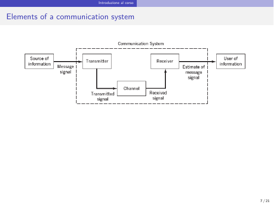
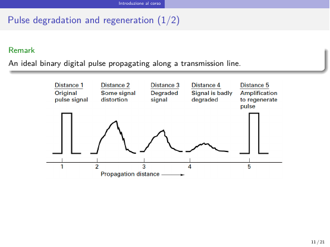
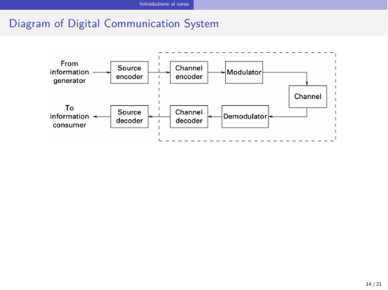

Home · Lezioni · Lezione 1 · 15/09
Introduzione al corso
Il processo di comunicazione, gli elementi di un sistema di comunicazione digitale, rigenerazione e vantaggi del digitale.
Indice della lezione
Il corso, slide per slide
Comunicazione e processo di comunicazione
- Comunicazione = trasferimento di informazione (voce, audio, video, file, pagine web...) tra punti diversi dello spazio o del tempo (memorizzazione).
- Il processo di comunicazione comporta:
- generazione di un segnale messaggio (voce, musica, immagine, dati);
- sua descrizione, con una certa precisione, mediante un insieme di simboli (elettrici, sonori, visivi);
- codifica dei simboli in forma adatta a un mezzo fisico;
- trasmissione dei simboli codificati alla destinazione;
- decodifica e riproduzione dei simboli originali;
- ricostruzione del messaggio con una degradazione definibile, dovuta a imperfezioni inevitabili.
- Anche nelle comunicazioni tra computer la decisione umana interviene solo nell'impostazione dei programmi o nel controllo dei risultati.
- Ogni sistema ha tre elementi base: trasmettitore, canale, ricevitore. La cascata trasmettitore + ricevitore è detta transceiver.
Elementi di un sistema di comunicazione

Sorgente → trasmettitore → canale → ricevitore → utente.
- Trasmissione: il trasmettitore è in un punto, il ricevitore in un altro, il canale è il mezzo fisico che li collega. Il trasmettitore converte il segnale messaggio della sorgente in una forma adatta al canale.
- Ricezione: propagandosi, il segnale si distorce per le imperfezioni del canale; all'uscita si sommano rumore e interferenze (da altre sorgenti): il segnale ricevuto è una versione corrotta del trasmesso. Il ricevitore ricostruisce una forma riconoscibile del messaggio per l'utente.
- Il processo di comunicazione, in ogni sistema, è di natura statistica.
Comunicazione digitale e rigenerazione
- Digitale: l'informazione è rappresentata in forma digitale (di solito cifre binarie, bit). Analogica: l'informazione assume un continuo di valori.
- Perché si passa al digitale: il vantaggio primario è la facilità di rigenerare i segnali digitali; con rivelazione e correzione d'errore si hanno probabilità d'errore bassissime e alta fedeltà (procedure non disponibili per l'analogico).

Impulso binario ideale lungo una linea: degradazione crescente con la distanza (1→4) e rigenerazione (5).
- La forma d'onda è alterata da due meccanismi: (i) linee e circuiti hanno una funzione di trasferimento non ideale (distorsione); (ii) rumore elettrico e altre interferenze. Entrambi degradano l'impulso con la lunghezza della linea.
- Finché l'impulso è ancora identificabile con affidabilità (prima di diventare ambiguo), un amplificatore digitale ne recupera la forma ideale: l'impulso «rinasce». I circuiti che lo fanno a intervalli regolari sono i ripetitori rigenerativi.
- Altri vantaggi: circuiti digitali più affidabili ed economici; hardware più flessibile (microprocessori, commutazione digitale, LSI); a bit is a bit (dati, telegrafo, telefono, TV trattati come segnali identici in trasmissione e commutazione); messaggi gestiti a pacchetti; elaborazioni contro interferenza e jamming, crittografia e privacy; molta comunicazione è tra computer, terminazioni digitali.
Schema di un sistema di comunicazione digitale

| Blocco | Funzione (slide) |
|---|---|
| Codificatore di sorgente | Ogni informazione si rappresenta in modo efficiente in forma digitale con precisione arbitraria, con un numero di bit che dipende dalla fedeltà richiesta. Realizza la conversione A/D (sorgenti analogiche) e riduce la ridondanza tenendo conto dell'utente finale. Bit rate: voce 64 kbit/s (telefonia cablata), MP3 consumer 128 kbit/s tipici, audio da studio circa 10 volte di più |
| Codificatore di canale | Introduce ridondanza controllata contro errori dovuti a imperfezioni e rumore del canale; l'uscita è una parola di codice progettata sul canale e sui requisiti dei livelli di rete superiori: rivelazione d'errore + ritrasmissione per applicazioni insensibili al ritardo, correzione d'errore per applicazioni real-time |
| Modulatore | Traduce simboli di messaggio o di canale (se c'è codifica di canale) in forme d'onda analogiche trasmissibili sul canale fisico |
| Canale | Distorce la forma d'onda in modo diverso a seconda dei casi: cablato → sistema LTI descritto dalla risposta impulsiva; wireless mobile → variabile per la mobilità relativa TX-RX; il wireless è un mezzo broadcast, quindi può esserci interferenza di accesso multiplo |
| Rumore termico | Alla ricezione il segnale è corrotto dal rumore termico dei componenti. Un elemento con due terminali ha resistenza R (Ω); contiene elettroni liberi in moto casuale se la temperatura è sopra lo zero assoluto, il che genera una tensione di rumore ai terminali. È piccolo, ma diventa un problema se amplificato da un ricevitore ad alto guadagno. Si caratterizza con la meccanica quantistica |
| Demodulatore | Elabora la forma d'onda ricevuta (distorta e rumorosa). Compito chiave: sincronizzazione (il canale produce sfasamenti di fase, frequenza e tempo; clock e oscillatori di TX e RX non sono sincronizzati a priori). Può fare anche equalizzazione di canale. Obiettivo finale: produrre decisioni sui simboli trasmessi (detection) per il decodificatore di canale |
| Decodificatore di canale | Sfrutta la ridondanza inserita in trasmissione per stimare i simboli di informazione in ingresso al codificatore di canale |
| Decodificatore di sorgente | Converte i bit stimati in un formato utilizzabile dall'utente, non necessariamente quello originale (esempio: la voce tradotta in testo, codificata in bit; il decodificatore mostra il testo invece di riprodurre la voce) |
Vantaggi dell'approccio digitale e separazione
- Progetto indipendente dalla sorgente: trasformata l'informazione in bit, la si memorizza o trasmette senza interpretarla; il mezzo non dipende dalla sorgente e sorgenti diverse condividono lo stesso mezzo.
- Progetto ottimizzato per il canale: per ogni collegamento si ottimizzano codifica di canale e modulazione per quel canale. Poiché i bit sono rigenerati a ogni tratta, non c'è accumulo di rumore.
- Osservazioni: (1) lo schema si basa sulla separazione tra codifica di sorgente e di canale, che dà vantaggi pratici ed è ottima per collegamenti punto-punto (teoria dell'informazione); in certi casi la codifica congiunta dà prestazioni migliori. (2) Le comunicazioni semantiche sono un tema emergente: invece di recuperare accuratamente la sequenza di bit, si trasmette il significato della sorgente; la codifica semantica estrae le caratteristiche utili ai compiti da eseguire al ricevitore.
Spiegazioni e dimostrazioni passo-passo
Apri una voce per leggere la spiegazione in parole semplici e le dimostrazioni svolte riga per riga (🧩 = passaggio ricostruito da me).
Sistema di comunicazione digitale
Spiegazione
Processo di comunicazione
Passi logici del processo:
- generazione del segnale messaggio (voce, musica, immagine, dati);
- descrizione del messaggio con una certa precisione tramite un insieme di simboli;
- codifica dei simboli in forma adatta al mezzo fisico;
- trasmissione dei simboli codificati;
- decodifica e riproduzione dei simboli originali;
- ricreazione del messaggio con una degradazione definibile, dovuta a imperfezioni inevitabili.
Il segnale si distorce propagandosi nel canale; in più al ricevitore si sommano rumore e interferenze. Il segnale ricevuto è quindi una versione corrotta di quello trasmesso.
🎯 Esame: «Il processo di comunicazione, in ogni sistema, è di natura statistica». Per questo nel corso servono la teoria della probabilità e i processi aleatori.
Sorgente → trasmettitore → canale → ricevitore → utente
Schema a blocchi del sistema digitale
| Blocco | Funzione |
|---|---|
| Codificatore di sorgente | Conversione A/D (per sorgenti analogiche) e riduzione della ridondanza, secondo i requisiti dell'utente finale |
| Codificatore di canale | Introduce ridondanza controllata contro gli errori del canale; produce una parola di codice |
| Modulatore | Traduce simboli (di messaggio o di canale) in forme d'onda analogiche trasmissibili |
| Canale | Distorce la forma d'onda: LTI (risposta impulsiva) per i canali cablati; tempo-variante per il wireless mobile; interferenza di accesso multiplo nel wireless (mezzo broadcast) |
| Demodulatore | Sincronizzazione (sfasamenti di fase, frequenza, tempo; clock non sincronizzati a priori), eventuale equalizzazione, decisione sui simboli (detection) |
| Decodificatore di canale | Sfrutta la ridondanza per stimare i simboli d'informazione |
| Decodificatore di sorgente | Converte i bit stimati in un formato usabile dall'utente (non per forza quello originale, es. voce → testo) |
Codifica di canale: per applicazioni insensibili al ritardo si usa rivelazione d'errore + ritrasmissione; per applicazioni real-time si usa correzione d'errore.
Il blocco tratteggiato dello schema (codificatore di canale →... → decodificatore di canale) è la parte "trasmissiva" su cui si concentra il corso.
Rumore termico
Il segnale ricevuto è corrotto dal rumore termico generato dai componenti elettronici. Un conduttore di resistenza R (Ω) a temperatura sopra lo zero assoluto contiene elettroni liberi in moto casuale, che producono una tensione di rumore ai suoi capi. Il rumore è piccolo, ma diventa un problema quando viene amplificato da un ricevitore ad alto guadagno. Si caratterizza con la meccanica quantistica.
TODO: da espandere — la slide non dà formule (densità spettrale, kT). Le slide sui processi aleatori citano il rumore termico come esempio di segnale aleatorio (processo aleatorio) e danno gli strumenti per descriverlo (densita spettrale di potenza, processo gaussiano), ma non il suo modello quantitativo.
Perché "going digital"
- Rigenerazione: il vantaggio principale. Vedi ripetitore rigenerativo.
- Basse probabilità d'errore grazie a rivelazione e correzione d'errore, che non hanno equivalenti analogici.
- Circuiti digitali più affidabili ed economici; implementazione flessibile (microprocessori, switching digitale, LSI).
- «A bit is a bit»: dati, telegrafo, telefono e TV vengono trattati come segnali identici.
- Gestione a pacchetti; protezione da interferenza/jamming; crittografia e privacy.
- Gran parte del traffico è tra computer, che per natura sono terminazioni digitali.
Vantaggi dell'approccio digitale e principio di separazione
- Progetto indipendente dalla sorgente: una volta ridotta in bit, l'informazione si memorizza o trasmette senza interpretarla, e sorgenti diverse condividono lo stesso mezzo.
- Progetto ottimizzato per il canale: codifica di canale e modulazione si ottimizzano per ogni collegamento. Siccome i bit vengono rigenerati a ogni tratta, il rumore non si accumula.
🎯 Esame: lo schema si basa sulla separazione tra codifica di sorgente e di canale. Il principio di separazione dà vantaggi pratici ed è ottimo per collegamenti punto-punto (risultato di teoria dell'informazione). In certi casi la codifica congiunta sorgente-canale dà prestazioni migliori.
Comunicazioni semantiche (tema emergente): invece di ricostruire fedelmente la sequenza di bit, si trasmette il significato della sorgente. La codifica semantica estrae le caratteristiche utili al compito che il ricevitore deve svolgere.
Perché importa
È il quadro di riferimento di tutto il corso: ogni argomento del programma corrisponde a un blocco dello schema:
- rappresentazione complessa in banda base → come modulatore e demodulatore lavorano in banda base, con upconverter e downconverter verso il canale (inviluppo complesso, upconversion e downconversion);
- modulazione digitale → modulatore/demodulatore (modulazione digitale);
- stima dei parametri e sincronizzazione → demodulatore;
- canali selettivi in frequenza → canale ed equalizzazione;
- teoria dell'informazione e codifica di canale → codificatore/decodificatore di canale;
- conversione A/D → codificatore di sorgente (teorema del campionamento, quantizzazione uniforme).
Dimostrazioni passo-passo
Nessun risultato numerico da espandere nella fonte. Il collegamento quantitativo con il bit rate da 64 kbit/s è in campionamento e aliasing e dimensionamento quantizzatore.
💡 Connessione: 64 kbit/s = 8 kHz × 8 bit/campione. La frequenza di campionamento di 8 kHz per la voce è (banda 4 kHz → f_c \ge 8 kHz, vedi teorema del campionamento). 📚 Fonte esterna: gli 8 bit/campione sono della raccomandazione ITU-T G.711 (vedi g711); le slide non riportano questo valore.
Ripetitore rigenerativo
Cos'è
Circuito posto a intervalli regolari lungo una linea di trasmissione digitale. Prima che l'impulso trasmesso diventi ambiguo, lo amplifica con un amplificatore digitale e ne recupera la forma ideale originale: l'impulso viene "rigenerato" (reborn).
Impulso binario lungo una linea: distorsione crescente con la distanza (1→4) e rigenerazione (5)
La forma d'onda si degrada con la lunghezza della linea per due meccanismi:
- distorsione: linee e circuiti hanno una funzione di trasferimento non ideale;
- rumore elettrico e interferenze.
Come si usa nel corso
È il motivo principale del passaggio al digitale. Siccome i bit vengono rigenerati a ogni tratta, il rumore non si accumula lungo il collegamento. Con un amplificatore analogico, invece, il rumore verrebbe amplificato insieme al segnale.
🧩 Derivazione mia: il confronto con l'amplificatore analogico è implicito nelle slide («similar procedures are not available with analog»), qui lo rendo esplicito.
Concetti correlati
- sistema comunicazione digitale
Domande da esame
- Descrivere lo schema a blocchi di un sistema di comunicazione digitale e la funzione di ogni blocco.
- Perché i sistemi di comunicazione "diventano digitali"? Cos'è un ripetitore rigenerativo?
- Quali compiti svolge il demodulatore?
- Cosa dice il principio di separazione e quali vantaggi porta?
- Perché il processo di comunicazione è di natura statistica?